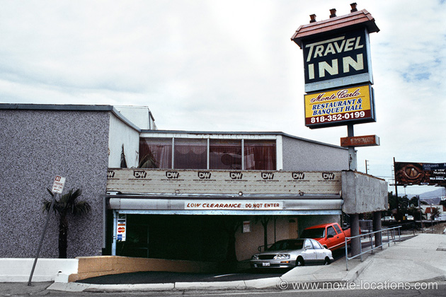
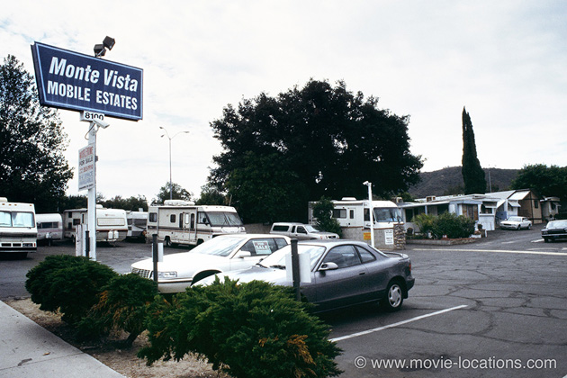
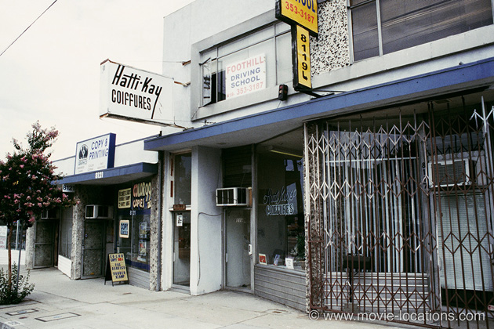
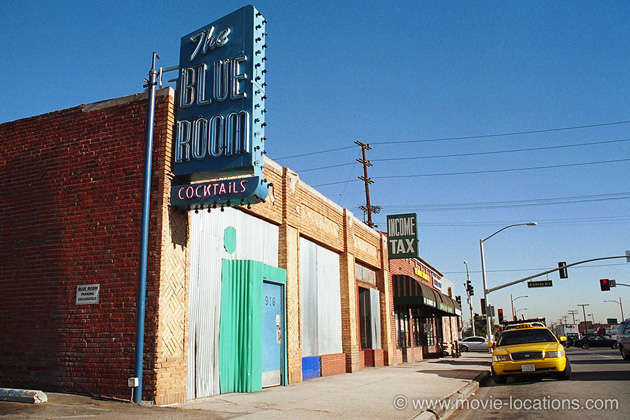

Memento
Main Content

Like Bryan Singers The Usual Suspects, Christopher Nolans ingeniously-plotted, reverse-timescale mystery, requires multiple viewings.
The film was shot almost entirely in Los Angeles’ San Fernando Valley, where most of the major film studios can be found – and hence a popular area for location filming.
There's no ‘Discount Inn’. The motel in which amnesiac Leonard Shelby (Guy Pearce) holes up, is the Travel Inn, 7254 Foothill Boulevard, Tujunga at Hillhaven Avenue. Will Smith stays here in 2008 drama Seven Pounds. The motel is not far from the animal sanctuary location for Terminator 3: Rise of the Machines. Tujunga, incidentally, is where you'll find Elliot’s house from E.T..

As Leonard drives to meet Natalie (Carrie-Anne Moss) he passes 510 North Victory Boulevard, directly opposite the Burger King behind which Doc Emmett lived in Back to the Future).
“ OK. So what am I doing? I’m chasing this guy. No. He’s chasing me...”: Leonard plays cat-and-mouse, or mouse-and-cat, with Dodd around the motor homes of Monte Vista Mobile Estates, 8100 Foothill Boulevard, Sunland.

Directly across the boulevard, Hatti-Kay Coiffures, in the Edward I Zwern Building, 8119 Foothill Boulevard at Mather, became ‘Emma’s Tattoo’, where “Fact No. 6: car license SG13 7IU” is inked onto Leonard’s body.

Natalie puts Leonard’s short-term memory loss to the test by serving up disgustingly contaminated beer. ‘Ferdy’s Bar’ is the Blue Room, 916 South San Fernando Road at Alameda Avenue, Burbank, which can also be seen in Touch and Change of Heart.
Behind the corrugated front is a stylish neighbourhood bar, good for after-work drinks and with a rep for attracting studio execs. It's also the bar at which Nate (Jon Voight) is drinking when he gets a call from McCauley (Robert de Niro) to get Van Zant’s address in Michael Mann’s Heat.
Visit Info
Visit The Film Locations
California | Los Angeles
Visit: Los Angeles
Flights: Los Angeles International Airport (LAX), 1 World Way, Los Angeles, CA 90045 (tel: 424.646.5252)
Travelling around: Los Angeles Metro
Visit: the Blue Room, 916 South San Fernando Boulevard, Burbank, CA 91502 (tel: 323.849.2779)